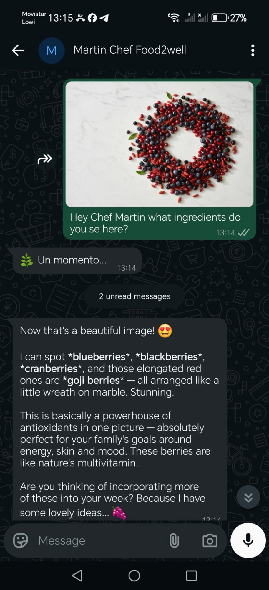
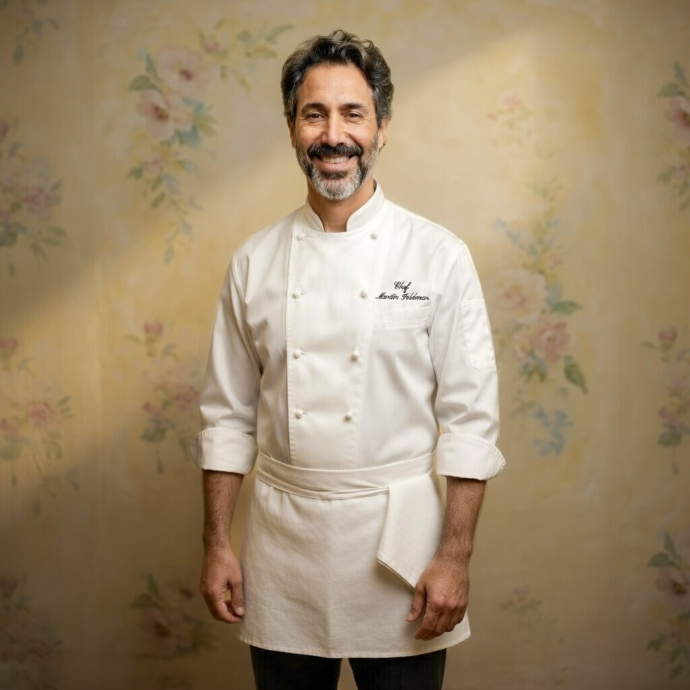

tml lang="en">
crafted for families —
delivered through WhatsApp.
Like having a
brilliant chef friend.
In your WhatsApp.
Chef Martin knows your family. Their names, their allergies, their favourite meals — and what's in your fridge. Every Wednesday, a personalised week of dinners lands in your WhatsApp. No apps. Just warmth, wisdom and great food.
Why not just use ChatGPT?
ChatGPT answers questions.
Martin knows your family.
£12/month after trial · Cancel anytime · No commitment
Food made with
intention & warmth.
Three steps.
Infinite dinners.
Chef Martin handles the thinking so you can focus on the cooking — and the conversations around the table.
Martin learns your family
Tell him about your family — ages, allergies, favourite flavours, budget, kitchen confidence. He listens, remembers, and keeps learning from every meal.
Every Wednesday, your plan arrives
A full week of dinners lands on WhatsApp. Perfectly timed, leftovers connected, school canteen cross-referenced. Reply with changes — he adjusts instantly.
Shop, cook, enjoy
Your smart shopping list arrives Saturday. Organised by aisle, budget-conscious, nothing wasted. Cook with confidence. The family gathers. Magic happens.
More than recipes.
A relationship.
Most meal planning tools give you recipes. Chef Martin gives you something rarer — a brilliant, warm presence who knows your family like an old friend, thinks about your leftovers, remembers what Emma refused last Tuesday, and occasionally says something that makes you laugh out loud in the kitchen.
- Personalised weekly menusBuilt around your family's real tastes, allergies, and schedule — not a generic template.
- Smart shopping listsSaturday delivery, organised by section, nothing duplicated, budget always in mind.
- Monthly family cookbookEvery meal, every memory — compiled into a beautiful monthly PDF. Your family's culinary story.
- Photo intelligence — 150 scans/monthFridge, labels, leftovers, receipts, restaurant dishes. Martin's chef eyes in your kitchen.
- Monthly voice check-inA monthly voice session with Martin — everyone gets a moment, especially the little ones.
- Health & reset guidanceGentle protocols when the family needs a reset — lighter weeks, seasonal detoxes, fasting guidance.
The secret of a good soup? Patience... and a wooden spoon touched by many hands.
— Chef Martin Goldman, on the philosophy of family cooking
Three messages.
Three magic moments.
Not a bot. Not a template. A real chef who reads your photos, knows your kitchen, and responds like a friend who happens to know everything about food.
For 10 jars you'll need:
• 5 cups Greek yogurt
• 3–4 cups granola
• 2 cups frozen blueberries
• 3–4 ripe mangoes
I'd grab an extra mango — they're temperamental at the market. 🌿16:45
Turkey stretches beautifully. Shred it into a warm soup with onion and potato — it becomes a proper meal instantly.
Or make it the star of a salad — greens, cheese, a simple vinaigrette. The turkey becomes the protein that satisfies everyone.
A quick pasta works too — sauté with garlic, cream or good olive oil, toss with whatever vegetables want to join the party. 🌿13:20

Five cold sandwiches, one per weekday, for four. Cheese and vegetables as the foundation, with little surprises to keep each day interesting.
I'm already imagining Monday's sandwich different from Friday's — fresh and bright to start, building through the week. Different cheeses, different breads, spreads that make everything feel special. 🌿12:43
Send a photo.
Martin sees everything.
Point your phone at anything in your kitchen. Martin responds like the brilliant chef he is — not a chatbot answer, a real specific response that makes you a better cook immediately.
150 photo scans included every month 🌿
All included in your £12/month · No extra charges · Just WhatsApp
£12 a month.
Many families save much more.
The average UK household wastes £60–£80 of food every month — that's over £800 a year thrown away. (Source: WRAP UK)
Martin helps you plan meals, use what you have, and shop with intention. Many families save more than the subscription in their very first week.
Results vary by household. Based on WRAP UK food waste research and shopping behaviour studies.
Already changing
family tables.
"Chef Martin knows what my kids actually eat. Shopping used to take an hour of decisions — now I just follow the list. It's changed our whole week."
"Our monthly cookbook is like a family treasure — full of memories and favourite meals. The kids argue about which photo goes on the cover."
"He remembered that Lucia hates mushrooms without me having to say it twice. And his message last Wednesday made me actually laugh out loud."
Built from 30 years
at the table.
Chef Martin Goldman is a real person. Thirty years in professional kitchens — Executive Chef at Iberia Airlines, leading school catering for Compass Group Spain across hundreds of families.
The chapter that changed everything was the quietest one — volunteering at Camphill Community Mourne Grange in Ireland, cooking alongside adults with learning disabilities. No titles. No critics. Just people, food, and the extraordinary things that happen when both are treated with dignity. That experience didn't just teach him about food. It made him a better person.
"I built this because I'm a father of four and I know exactly how hard the daily question of 'what's for dinner?' can feel — and how beautiful it becomes when someone walks alongside you with warmth and wisdom."
— Chef Martin Goldman · Father of four · Food2Well founder
Your family deserves
a chef like Martin.
15 days free. No commitment. Just great food and someone who genuinely cares about your table.
£12/month after trial · Cancel anytime · Works on WhatsApp — no app to download